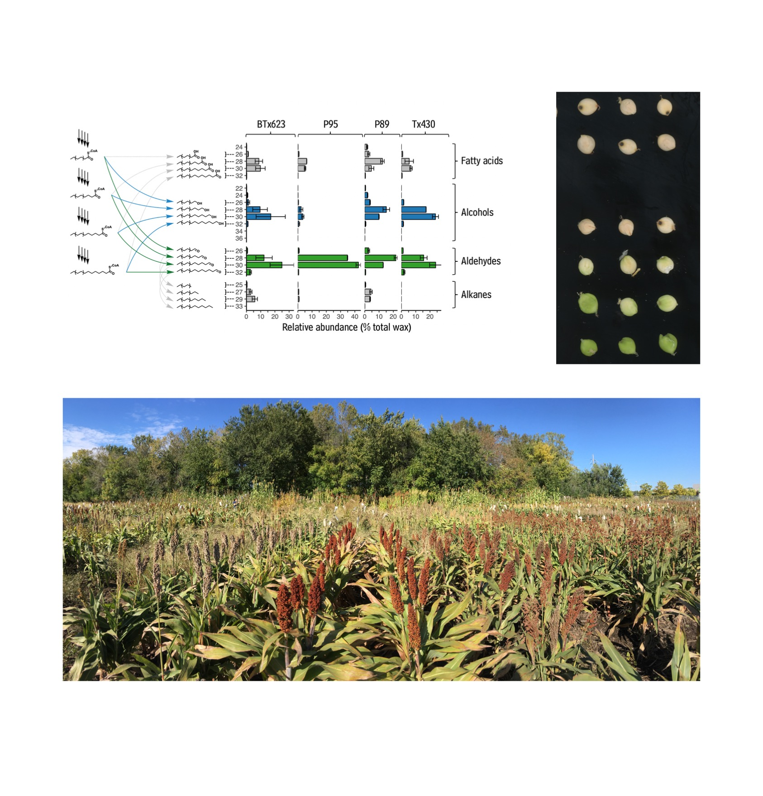
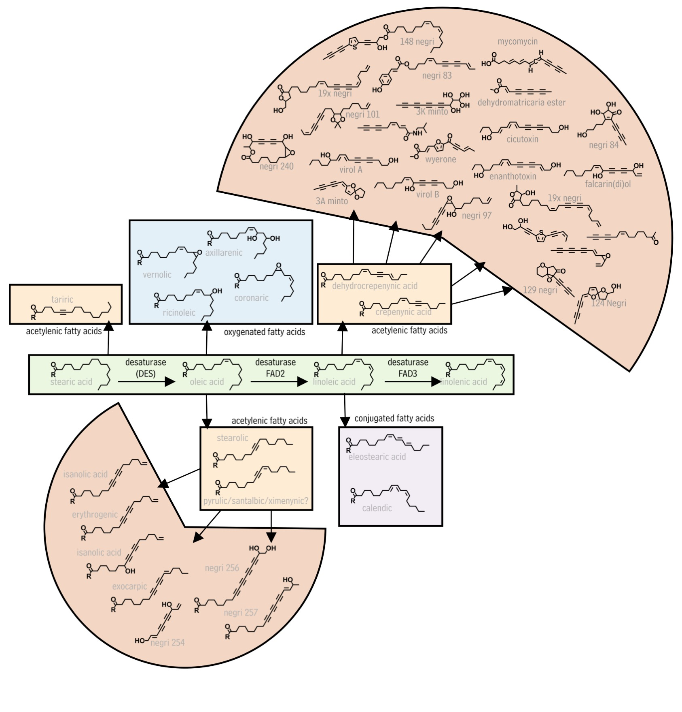

Plants are rooted in the ground and cannot run away from environmental challenges - instead, they use complex metabolic networks that generate a massive diversity of bioactive chemical compounds. My research focuses on understandin the biochemistry and evolution of metabolic pathways that lead to bioactive plant natural products. In this pursuit I am using informatics to unite classical analytical chemistry with emerging high-throughput DNA sequencing technologies. At the moment, I am using this approach to study the chemistry that plants enact using fatty acids as metabolic starting points or building blocks. This research has both fundamental and applied components, and the following areas are currently being explored:
Development of sorghum kernel waxes as a platform for the production of fatty-acid derived natural products
Natural waxes are a high value product used in diverse areas of industry. Essentially all the natural waxes used in the U.S. are imported from carnauba palm plantations. However, sorghum (milo) kernels are also coated in substantial amounts of wax and are emerging as a promising, domestic substitute for carnauba wax. I am currently investigating the following questions in this area. This project is supported by a fellowship from the National Science Foundation Fellowship PRFB IOS-1812037.
Current short-term questions
- What genes control the chemical profile of sorghum waxes?
- What genes control the abundance of waxes on sorghum kernels?
Long-term questions
- What genetic elements confer kernel epidermis-enhanced expression to sorghum genes?
- What are effective strategies for the engineering of sorghum wax amounts and composition?
Biosynthesis and evolution of fatty acid-derived natural products
Plants produce a massive array of chemicals to enhance their fitness. Relatively large efforts have been made to understand certain classes of these compounds, including phenolics, terpenoids, and alkaloids. By comparison, there has been almost no progress toward understanding fatty-acid derived natural products, even though more than 250 such compounds are already known, many of which have unique and potent bioactivites. I am currently focused on answering the following questions in this area:
Current short-term questions
- What biosynthetic pathway leads to polyacetylenes in Daucus carota?
- How have polyacetylene pathways evolved among Apiales and Asterales species?
Long-term questions
- What is the structural diversity of plant fatty acid-derived natural products?
- What is the genetic basis for these diverse structures?
Chemical blooms as bioinspiration for new modes of natural products synthesis
 Virtually all land plants coat themselves with waxes to protect against dehydration, but some plants go further and coat themselves in massive amounts of wax - enough that it is visible at a glance as a white coating. Though diverse plant lineages contain species that allocate carbon in this way, we have virtually no understanding of the function of these large investments of energy. I am currently focused on answering the following questions in this area:
Virtually all land plants coat themselves with waxes to protect against dehydration, but some plants go further and coat themselves in massive amounts of wax - enough that it is visible at a glance as a white coating. Though diverse plant lineages contain species that allocate carbon in this way, we have virtually no understanding of the function of these large investments of energy. I am currently focused on answering the following questions in this area:
Current short-term questions
- How do chemical blooms vary across the plant kingdom?
- What species have both wax blooms and available genetic resources?
Long-term questions
- What molecular machinery is required for generating epicuticular wax blooms and how can such be engineered?
- What types of natural products can be produced with wax blooms?